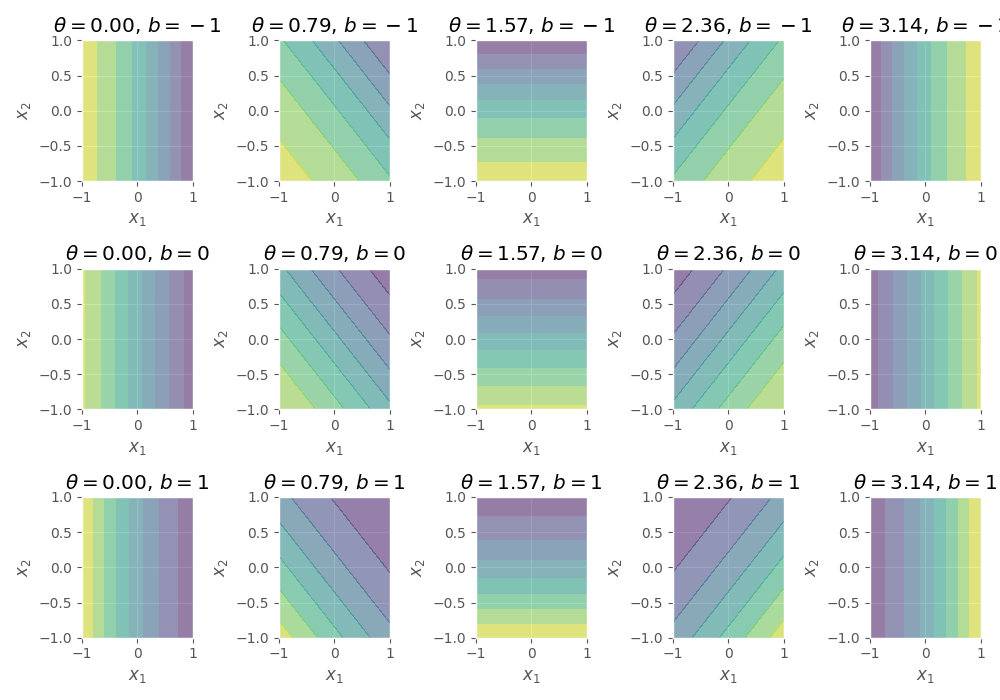
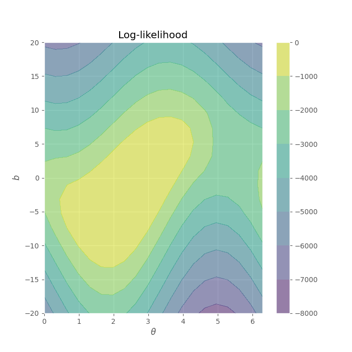
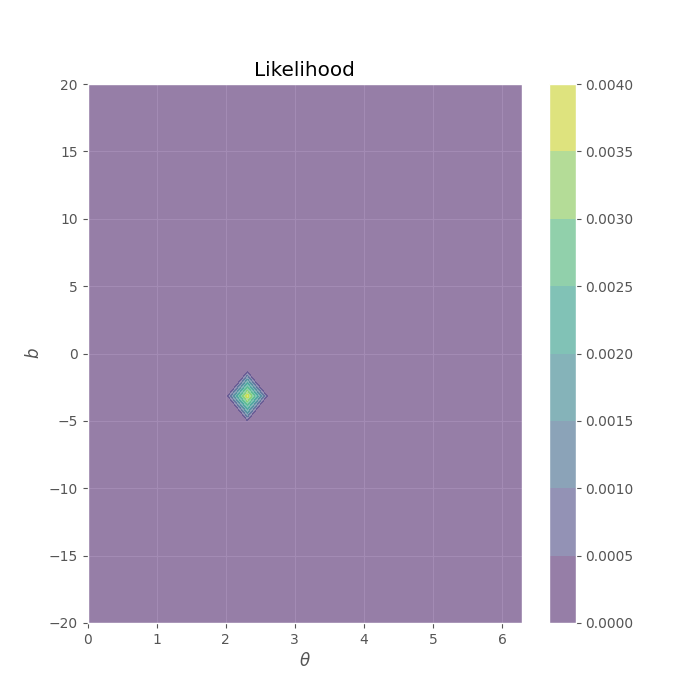
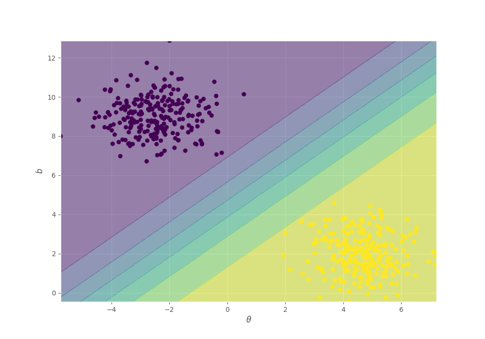

Lab 03.02.01
Contents
# init repo notebook
!git clone https://github.com/rramosp/ppdl.git > /dev/null 2> /dev/null
!mv -n ppdl/content/init.py ppdl/content/local . 2> /dev/null
!pip install -r ppdl/content/requirements.txt > /dev/null
Lab 03.02.01¶
In this laboratory we’ll understand the likelihood concept, its uses and limitations.
## Ignore this cell
!pip install ppdl==0.1.5 rlxmoocapi==0.1.0 --quiet
course_id = "ppdl.v1"
endpoint = "https://m5knaekxo6.execute-api.us-west-2.amazonaws.com/dev-v0001/rlxmooc"
lab = "L02.02.01"
import inspect
from rlxmoocapi import submit, session
import numpy as np
import matplotlib.pyplot as plt
from functools import partial
from sklearn.datasets import make_blobs
from scipy.optimize import minimize
plt.style.use("ggplot")
Log-in with your username and password:
session.LoginSequence(
endpoint=endpoint,
course_id=course_id,
lab_id=lab,
varname="student"
);
In this case, we’ll be using the following synthetic dataset:
X, y = make_blobs(
n_samples=500,
n_features=2,
centers=2,
random_state=42
)
fig, ax = plt.subplots(figsize=(10, 10))
ax.scatter(X[:, 0], X[:, 1], c=y)
ax.set_xlabel("$x_1$")
ax.set_ylabel("$x_2$")
Task 1¶
Implement the output probability distribution for a logistic regression model, this model is intended to work over features in \(\mathbb{R}^2\), i.e., the model’s parameters are the vector \(\mathbf{w} = [w_1, w_2]\) and the bias \(b\).
You must parameterize \(\mathbf{w}\) in a polar coordinate system, and consider the radians \(\mathbf{\theta}\) only, not the vector’s magnitude.
You must implement something similar to:
Where \(\theta \in [0, 2 \pi]\), \(b \in \mathbb{R}\) and \(\vec{f}: \mathbb{R} \rightarrow \mathbb{R}^2\) is a function that generates an unitary vector given an angle in radians \(\theta\):
def radian_logistic(X, theta, b):
...
Your function must return the same output when you run the next cell.

fig, ax = plt.subplots(3, 5, figsize=(10, 7))
theta = np.linspace(0, np.pi, 5)
b = np.array([-1, 0, 1])
x_grid = np.linspace(-1, 1, 100)
X1, X2 = np.meshgrid(x_grid, x_grid)
X_grid = np.concatenate([X1.reshape(-1, 1), X2.reshape(-1, 1)], axis=1)
for i in range(5):
for j in range(3):
probs = radian_logistic(X_grid, theta[i], b[j])
axi = ax[j, i]
axi.contourf(X1, X2, probs.reshape(X1.shape), alpha=0.5)
axi.set_xlabel("$x_1$")
axi.set_ylabel("$x_2$")
axi.set_title(f"$\\theta={theta[i]:.2f}$, $b={b[j]}$")
fig.tight_layout()
student.submit_task(namespace=globals(), task_id="T1");
Task 2¶
Implement the log-likelihood function for the model, where \(D=(\mathbf{X}, \mathbf{y})\)
def log_likelihood(X, y, params):
theta, b = params
...
Let us explore the likelihood function for different \((\theta, b)\) values, the following code cell must generate the following output:

theta = np.linspace(0, 2 * np.pi, 20)
b = np.zeros((1, 2))
b = np.linspace(-20, 20, 20)
T, B = np.meshgrid(theta, b)
params_grid = np.concatenate([T.reshape(-1, 1), B.reshape(-1, 1)], axis=1)
lik_fun = partial(log_likelihood, X=X, y=y)
lik = np.array([lik_fun(params=params_i) for params_i in params_grid])
fig, ax = plt.subplots(figsize=(7, 7))
im = ax.contourf(T, B, lik.reshape(T.shape), alpha=0.5)
ax.set_xlabel(r"$\theta$")
ax.set_ylabel("$b$")
ax.set_title("Log-likelihood")
fig.colorbar(im)
We can also view the likelihood:

theta = np.linspace(0, 2 * np.pi, 20)
b = np.zeros((1, 2))
b = np.linspace(-20, 20, 20)
T, B = np.meshgrid(theta, b)
params_grid = np.concatenate([T.reshape(-1, 1), B.reshape(-1, 1)], axis=1)
lik_fun = partial(log_likelihood, X=X, y=y)
lik = np.array([lik_fun(params=params_i) for params_i in params_grid])
fig, ax = plt.subplots(figsize=(7, 7))
im = ax.contourf(T, B, np.exp(lik.reshape(T.shape)), alpha=0.5)
ax.set_xlabel(r"$\theta$")
ax.set_ylabel("$b$")
ax.set_title("Likelihood")
fig.colorbar(im)
Let’s do a deep-dive into this joint likelihood function’s parameters:
\(\theta\) has a periodic behavior, which is reasonable considering the periodicity that occurs in a polar coordinate system.
The values in \(b\) are more likely around 0 (related with the features’ range).
Let’s see the best parameters according to maximum likelihood estimation
params = minimize(
lambda params: -log_likelihood(X, y, params),
x0=np.zeros((2, ))
)
theta_sol, b_sol = params.x[0], params.x[1]
print(theta_sol)
print(b_sol)
Finally, let’s see the predictions with this parameters. Your solution must look like:

fig, ax = plt.subplots(figsize=(10, 7))
x1 = np.linspace(X[:, 0].min(), X[:, 0].max(), 100)
x2 = np.linspace(X[:, 1].min(), X[:, 1].max(), 100)
X1, X2 = np.meshgrid(x1, x2)
X_grid = np.concatenate([X1.reshape(-1, 1), X2.reshape(-1, 1)], axis=1)
y_pred = radian_logistic(X_grid, theta_sol, b_sol)
ax.contourf(X1, X2, y_pred.reshape(X1.shape), alpha=0.5)
ax.scatter(X[:, 0], X[:, 1], c=y)
ax.set_xlabel(r"$\theta$")
ax.set_ylabel("$b$")
student.submit_task(namespace=globals(), task_id="T2");
Task 3¶
In this case, We’re going to assume that the likelihood is equal to the joint distribution of the model \(P(D, \theta, b)\) (which is wrong), and we’re going to marginalize over the parameters to assert if We’ve a valid probability distribution.
You must implement the following operation:
Using a discrete approximation:
def integral(X, y, min_theta, max_theta, min_b, max_b, n_points):
theta_range = np.linspace(min_theta, max_theta, n_points)
b_range = np.linspace(min_b, max_b, n_points)
delta_theta = theta_range[1] - theta_range[0]
delta_b = b_range[1] - b_range[0]
volumes = (
(
np.exp(log_likelihood(
X, y, np.array([theta_range[i], b_range[j]])
)) *
delta_theta * delta_b
)
for i in range(theta_range.size - 1)
for j in range(b_range.size - 1)
)
return sum(volumes)
min_theta, max_theta = 0, 2 * np.pi
min_b, max_b = -20, 20
n_points = 100
print(integral(X, y, min_theta, max_theta, min_b, max_b, n_points))
student.submit_task(namespace=globals(), task_id="T3");
Task 4¶
In this task you must compute the probibility of observing the evidence \(P(D)\) using a bayesian approach, to this end, We’ll assume the following prior distributions for the parameters:
You must compute:
Using a numerical approximation:
def evidence(X, y, min_theta, max_theta, min_b, max_b, n_points):
theta_range = np.linspace(min_theta, max_theta, n_points)
b_range = np.linspace(min_b, max_b, n_points)
delta_theta = theta_range[1] - theta_range[0]
delta_b = b_range[1] - b_range[0]
volumes = (
(
np.exp(log_likelihood(
X, y, np.array([theta_range[i], b_range[j]])
)) *
(1 / (max_theta - min_theta)) *
(1 / (max_b - min_b)) *
delta_theta * delta_b
)
for i in range(theta_range.size - 1)
for j in range(b_range.size - 1)
)
return sum(volumes)
min_theta, max_theta = 1, 4
min_b, max_b = -10, 5
n_points = 100
print(evidence(X, y, min_theta, max_theta, min_b, max_b, n_points))
Your result must be equal to 4.613945937156545e-05.
def grader4(functions, variables, caller_userid): import numpy as np
namespace = locals()
for f in functions.values():
exec(f, namespace)
def evidence_sol(X, y, min_theta, max_theta, min_b, max_b, n_points):
theta_range = np.linspace(min_theta, max_theta, n_points)
b_range = np.linspace(min_b, max_b, n_points)
delta_theta = theta_range[1] - theta_range[0]
delta_b = b_range[1] - b_range[0]
volumes = (
(
np.exp(log_likelihood(
X, y, np.array([theta_range[i], b_range[j]])
)) *
(1 / (max_theta - min_theta)) *
(1 / (max_b - min_b)) *
delta_theta * delta_b
)
for i in range(theta_range.size - 1)
for j in range(b_range.size - 1)
)
return sum(volumes)
radian_logistic = namespace["radian_logistic"]
log_likelihood = namespace["log_likelihood"]
evidence = namespace["evidence"]
msg = "Testing your code with 10 randomly generated cases </br>"
for _ in range(10):
n_features = 2
n_samples = np.random.randint(10, 100)
X = np.random.uniform(size=(n_samples, n_features))
y = np.random.randint(0, 2, size=(n_samples))
min_theta = np.random.uniform(0, np.pi)
max_theta = np.random.uniform(np.pi, 2 * np.pi)
min_b = np.random.uniform(-10, 0)
max_b = np.random.uniform(0, 10)
n_points = np.random.randint(5, 20)
evidence_res = evidence(X, y, min_theta, max_theta, min_b, max_b, n_points)
if not isinstance(evidence_res, float):
msg += f"<b>Your function must return a float number, it's returning a {type(evidence_res)}</b></br>"
return 0, msg
evidence_res_sol = evidence_sol(X, y, min_theta, max_theta, min_b, max_b, n_points)
if not np.isclose(evidence_res_sol, evidence_res):
msg += f"<b>Wrong answer!</b></br>"
return 0, msg
return 5, msg + "<b>Success!</b>"
student.submit_task(namespace=globals(), task_id="T4");